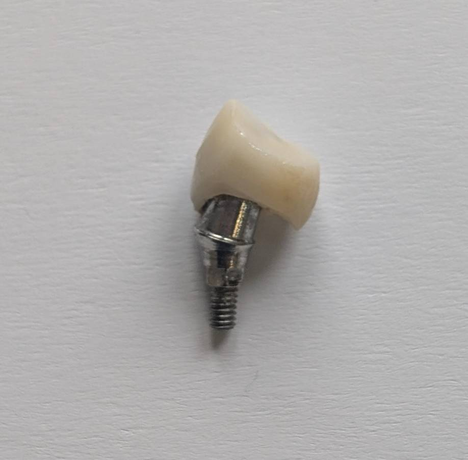

Chairside 17
وقتی قبل از شروع درمان، باید به جراحیِ قبلی شک کرد

بیماری با شکایت از افتادن مکرر روکش ایمپلنت مراجعه کرده بود. روکش و اباتمنت توسط دندانپزشک دیگری ساخته شده بودند؛ اما کیفیت تطابق، فیت و طراحی پروتز بهقدری ضعیف بود که حتی در نگاه اول، عدم هماهنگی روکش با اباتمنت کاملاً مشخص بود.
️گاهی بعضی بازسازیها فقط یک «روکش ناموفق» نیستند؛ بلکه نشانهای هستند از اینکه احتمالاً در لایههای عمیقتر درمان هم باید با احتیاط نگاه کرد.
وقتی کیفیت پروتز تا این حد پایین است، دیگر نمیتوان با اطمینان فرض کرد که جراحی، پوزیشن ایمپلنت، یا حتی انتخاب سیستم ایمپلنت لزوماً درست انجام شدهاند. وقتی جراح را نمیشناسی و تنها چیزی که از کار قبلی در دست داری یک پروتز ضعیف است، باید فرض کنی که هر لایهی پنهان درمان هم میتواند به همان اندازه ضعیف باشد.
قبل از هر تصمیمی، اولین سؤال من برند ایمپلنت بود. نه صرفاً برای سفارش قطعه؛ بلکه برای اینکه اصلاً مشخص شود آیا امکان ادامهی درمان وجود دارد یا نه.
در بسیاری از کیسهای ریفرال، قبل از هر قالبگیری یا طراحی جدید، باید بدانیم: آیا ابزار باز کردن، درایورها، قطعات پروتزی و سیستم قالبگیری آن ایمپلنت در دسترس هستند؟ آیا این سیستم هنوز ساپورت میشود؟ و اصلاً آیا ارزش ورود به درمان مجدد را دارد یا نه؟
این سؤالها فقط جنبهی لجستیکی ندارند. پاسخشان تعیین میکند که آیا اصلاً منطقی است هزینهای روی دوش بیمار گذاشته شود یا نه — حتی هزینهی رادیوگرافی. اگر در همان ابتدا مشخص شود که سیستم در دسترس نیست یا کار قابل ادامه نیست، حداقل بیمار بدون هزینهی اضافه از مطب بیرون میرود.
مرحلهی بعد، درخواست CBCT جدید از ناحیه داده شد؛ نه فقط برای بررسی استخوان، بلکه برای ارزیابی کلی وضعیت ایمپلنت، زاویه، عمق، ساپورت استخوانی و ثبت مستندات درمانی بیمار.
️گاهی سیتیاسکن فقط ابزار تشخیص نیست؛ ابزار تصمیمگیری است. تصمیم برای اینکه: «آیا این کیس باید ادامه پیدا کند؟»
وقتی جراح کیس را نمیشناسی، تو وارث تصمیمهای کسی میشوی که هیچوقت نخواهی دید. و از لحظهای که درمان را شروع کنی، در ذهن بیمار، تو درمانگر آن ایمپلنت میشوی؛ با تمام عواقبی که ممکن است بعدها ظاهر شود.
️شاید یکی از مهمترین بخشهای درمان ایمپلنت، توانایی «شروع نکردن» بعضی درمانها باشد.
محتوای این صفحه برای استفادهٔ آموزشی دندانپزشکان و دانشجویان دندانپزشکی تهیه شده است.